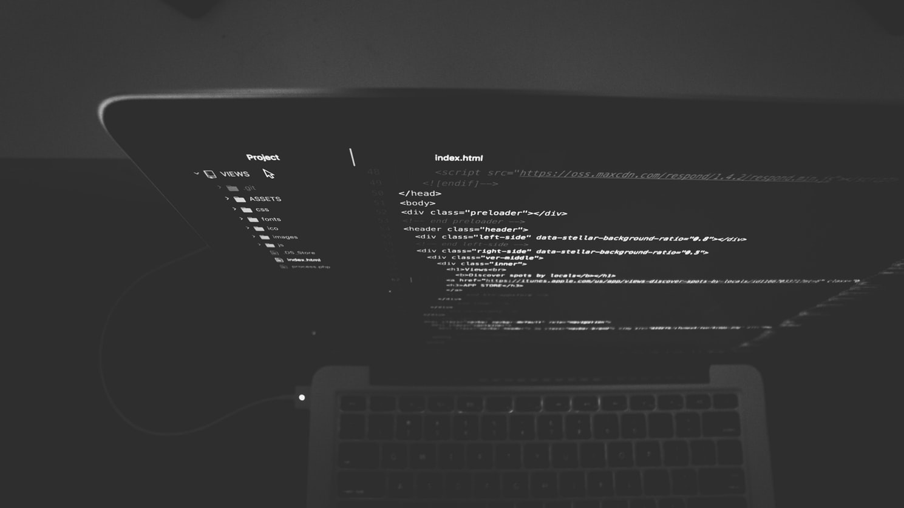

PHP code is usually processed on a web server by a PHP interpreter implemented as a module, a daemon or as a Common Gateway Interface (CGI) executable. On a web server, the result of the interpreted and executed PHP code — which may be any type of data, such as generated HTML or binary image data — would form the whole or part of a HTTP response. Various web template systems, web content management systems, and web frameworks exist which can be employed to orchestrate or facilitate the generation of that response. Additionally, PHP can be used for many programming tasks outside of the web context, such as standalone graphical applications and robotic drone control.] Arbitrary PHP code can also be interpreted and executed via command line interface (CLI).